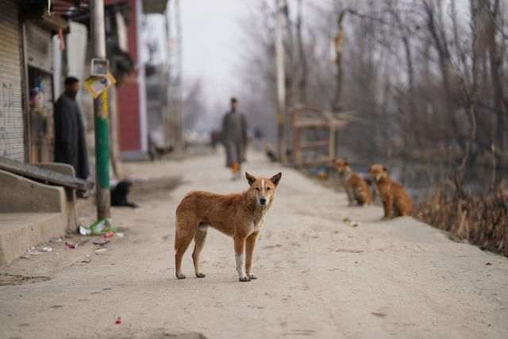

Modern kentleşme süreçleri, şehirleri yalnızca insan odaklı mimari yapılar olarak inşa ederken, aynı habitadı paylaştığımız diğer canlıların yaşam alanlarını büyük ölçüde daraltmıştır. Evcilleştirilme tarihleri gereği insan topluluklarına sosyo-biyolojik olarak bağımlı olan sahipsiz kedi ve köpekler, kentsel ekosistem içinde beslenme, barınma ve sağlık gibi en temel fizyolojik ihtiyaçlarını tek başlarına karşılamakta yetersiz kalmaktadır. Günümüzde sahipsiz hayvan popülasyonunun kontrolü; halk sağlığı, hayvan refahı, ekolojik denge ve toplumsal güvenliğin sağlanması açısından modern yerel yönetimlerin ve akademi dünyasının en önemli disiplinlerarası çalışma alanlarından biri haline gelmiştir. Bu kronik sorunun çözümü; palyatif ve geçici müdahaleler yerine, veri güdümlü, bilimsel ve sistematik yönetim modellerinin hayata geçirilmesiyle mümkündür.
Sahipsiz hayvan yönetiminin metodolojik açıdan ilk ve en kritik adımı, sahadaki mevcut durumun net bir şekilde ortaya konması, yani mikroçip ve benzeri teknolojilerle dijital kimliklendirme yapılmasıdır. Popülasyonun tür, yaş, sağlık geçmişi ve coğrafi dağılım (konum) verileri merkezi bir veri tabanında kayıt altına alınmadığı sürece, üreme hızının ve dönemsel artışların rasyonel bir şekilde kontrol edilmesi istatistiksel olarak imkansızlaşmaktadır.
Sorunun makro düzeyde çözülmesi; yerel yönetimler, veteriner hekimler, sivil toplum kuruluşları ve gönüllü vatandaşların koordineli bir ekosistem içinde çalışmasını zorunlu kılmaktadır. Sokakta yaşayan canlıların sistematik olarak aşılanması, kısırlaştırılması ve paraziter tedavilerinin periyodik olarak yürütülmesi; hem hayvan refahını optimize etmekte hem de zoonoz (hayvanlardan insanlara geçen) hastalıkların yayılmasını engelleyerek halk sağlığı risklerini minimize etmektedir.
Sürdürülebilir çözümün en etkin ayağını, rasyonel çalışan bir sahiplendirme mekanizması oluşturmaktadır. Geçici bakımevlerindeki ve sokaklardaki hayvanların, belirli standartlara ve denetim süreçlerine tabi tutularak uygun bireylerle eşleştirilmesi, toplumsal empati duygusunu entelektüel düzeye taşımaktadır. Bu durum, aynı zamanda kamu barınakları üzerindeki lojistik ve finansal iş yükünü de kalıcı olarak hafifletmektedir.
Sahipsiz hayvan popülasyonunun yönetimi, şehirlerimizin hem biyo-politik olgunluğunu hem de idari kapasitesini yansıtan toplumsal bir göstergedir. Hayvan refahının evrensel standartlarda sağlanması; günübirlik ve reaktif politikalar yerine, planlı veri yönetimi, yasal mevzuatların etkin uygulanması ve çok paydaşlı iş birlikleriyle mümkündür. Toplumun tüm katmanlarının bu süreçte bilimsel ve hukuki sorumluluk alması, kentsel alanları hem insanlar hem de çevre sakinleri olan diğer canlılar için daha güvenli, hijyenik ve yaşanabilir kılacaktır. Bugün atılacak kurumsal ve organize adımlar, gelecekte kentsel yaşamı paylaştığımız tüm unsurlarla birlikte uyum, refah ve adalet içinde yaşayacağımız bir ortak geleceğin entelektüel temelini oluşturacaktır